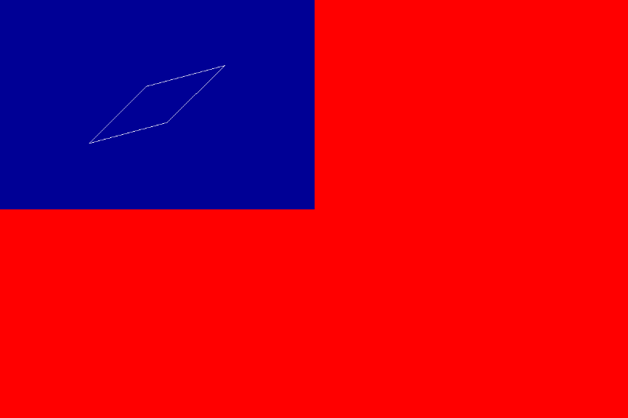

try Do <<
Previous Next >> ANS 2
ANS 1

在try Do裡嘗試修改與詢問chatGTB後將程式太陽的部分根線條一併移除後，將第二組點位一一輸入後，得到此結果，下面是程式碼的部分。
#include <stdio.h>
#include <gd.h>
#include <math.h>
void draw_roc_flag(gdImagePtr img);
void draw_white_sun(gdImagePtr img, int x, int y, int size, int color);
//void connectPoints(gdImagePtr img, int x1, int y1, int x2, int y2, int color);
int main() {
// width 3: height 2
int width = 1200;
// 國旗長寬比為 3:2
int height = (int)(width * 2.0 / 3.0);
gdImagePtr img = gdImageCreateTrueColor(width, height);
gdImageAlphaBlending(img, 0);
draw_roc_flag(img);
FILE *outputFile = fopen("Y:/tmp/c_ex/roc_02.png", "wb");
if (outputFile == NULL) {
fprintf(stderr, "Error opening the output file.\n");
return 1;
}
gdImagePngEx(img, outputFile, 9);
fclose(outputFile);
gdImageDestroy(img);
return 0;
}
void draw_roc_flag(gdImagePtr img) {
int width = gdImageSX(img);
int height = gdImageSY(img);
int red, white, blue;
// 白日位於青天面積正中央, 因此中心點座標為長寬各 1/4 處
int center_x = (int)(width / 4);
int center_y = (int)(height / 4);
// gdImageFilledEllipse 需以長寬方向的 diameter 作圖
// 由於中央白日圓形的半徑為青天寬度的 1/8
// 因此中央白日圓形的直徑為青天寬度的 1/4, 也就是國旗寬度的 1/8
// 而且白日十二道光芒的外圍圓形其半徑也是國旗寬度的1/8
int sun_radius = (int)(width / 8);
// 中央白日圓形的直徑等於十二道光芒外圍圓形的半徑
int white_circle_dia = sun_radius;
// 中央藍色圓形半徑為中央白日的 1又 2/15
int blue_circle_dia = white_circle_dia + white_circle_dia * 2 / 15;
// 根據 https://www.moi.gov.tw/cp.aspx?n=10621 訂定國旗三種顏色值
red = gdImageColorAllocate(img, 255, 0, 0); // 紅色
white = gdImageColorAllocate(img, 255, 255, 255); // 白色
blue = gdImageColorAllocate(img, 0, 0, 149); // 藍色
// 根據畫布大小塗上紅色長方形區域
gdImageFilledRectangle(img, 0, 0, width, height, red);
// 青天面積為整面國旗的 1/4, 也是採用長方形塗色
gdImageFilledRectangle(img, 0, 0, (int)(width / 2.0), (int)(height / 2.0), blue);
// 先設法以填色畫出六個白色堆疊菱形
//draw_white_sun(img, center_x, center_y, sun_radius, white);
// 利用一個藍色大圓與白色小圓畫出藍色環狀
//gdImageFilledEllipse(img, center_x, center_y, blue_circle_dia, blue_circle_dia, blue);
//gdImageFilledEllipse(img, center_x, center_y, white_circle_dia, white_circle_dia, white);
{int x1 = 429;
int y1 = 125;
int x2 = 279;
int y2 = 165;
// 畫第一條線連接兩個點(AB)
gdImageLine(img, x1, y1, x2, y2, white);
}
{int x1 = 170;
int y1 = 274;
int x2 = 279;
int y2 = 165;
// 畫第二條線連接兩個點(EB)
gdImageLine(img, x1, y1, x2, y2, white);
}
{
int x1 = 170;
int y1 = 274;
int x2 = 319;
int y2 = 234;
// 畫第三條線連接兩個點(ED)
gdImageLine(img, x1, y1, x2, y2, white);
}
{
int x1 = 319;
int y1 = 234;
int x2 = 429;
int y2 = 125;
// 畫第四條線連接兩個點(DA)
gdImageLine(img, x1, y1, x2, y2, white);
}
}
//void connectPoints(gdImagePtr img, int x1, int y1, int x2, int y2, int color) {
//gdImageLine(img, x1, y1, x2, y2, color);
原本連線因為第四點看錯，而變成三角形，後來檢查時發現，立即將第四點重新補上，圖根程式也重新修改完成。
(註:使用繪圖方法為在自己USB存的tinyc檔裡的gd線條畫圖畫的)
try Do <<
Previous Next >> ANS 2